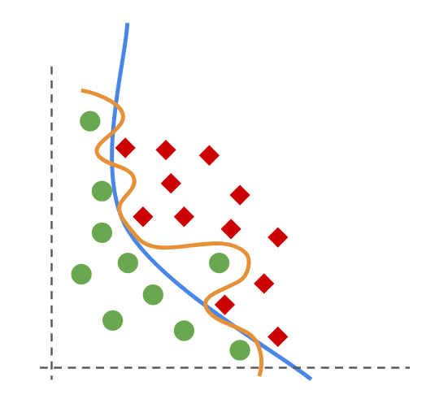
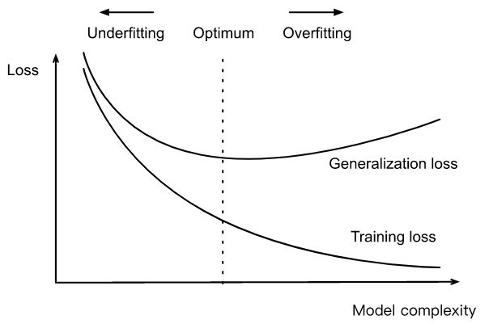
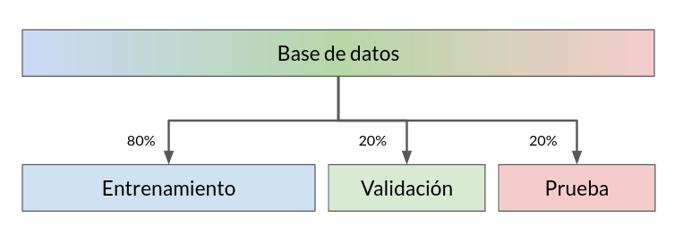

3. Sobreajuste, Validación y Regularización#
3.1. Definiciones#
En el ejemplo del regresor polinomial vimos que aumentar el grado del polinomio vuelve más flexible al modelo, es decir que aumenta su capacidad para ajustar los datos.
Nota
La cantidad de parámetros (grados de libertad) del modelo es un proxy de su complejidad. Un modelo más complejo (más parámetros) es en general más flexible.
Sin embargo, si la flexibilidad es excesiva, podríamos aproximar ciertos datos con error cero. Esta situación, en que el modelo ha “memorizado los datos”, se conoce como sobreajuste.
En la siguiente figura las lineas naranja y azul representan dos modelos que buscan separar los círculos verdes de los diamantes rojos
{kind=link}
El modelo naranjo clasifica mejor pero se ha sobreajustado a los datos.
Advertencia
Siempre debemos considerar que los datos no son perfectos y que pueden tener ruido. Un modelo sobreajustado se “aprende el ruido” y en consecuencia puede desempeñar muy mal sobre datos nuevos: Pierde capacidad de generalización.
La siguiente figura esquematiza de forma general la relación entre la complejidad de un modelo, su capacidad de ajuste (error de entrenamiento) y su capacidad de generalización (error en datos aun no observados):
{kind=link}
Figura: https://www.d2l.ai/chapter_multilayer-perceptrons/underfit-overfit.html
Nota
En general, mientras más simple (menos complejo) sea el modelo, menos propenso es a sobreajustarse (generaliza mejor).
Consejo
Podemos evitar el escenario sobreajustado en modelos complejos utilizando un conjunto de datos de validación o estrategias de regularización.
3.2. Estrategias de Validación#
Para combatir el sobreajuste podemos usar estrategias de validación, estas se basan en separar el conjunto de datos en dos o más subconjuntos, revisemos dos de ellas.
Hold-out
Consiste en separar los datos en conjuntos de entrenamiento, validación y prueba:
El primero se ocupa para entrenar o ajustar el modelo
El segundo se utiliza para detectar sobreajuste y calibrar los hiperparámetros del modelo
El tercero se ocupa para realizar una evaluación final libre de sesgos
La forma más simple de crear estos subconjuntos es permutar aleatoriamente los índices de los elementos y dividir los índices en distintas proporciones. Tipicamente se usa una proporción 60/20/20 o 80/10/10 dependiendo del tamaño de la base de datos original, como muestra el siguiente esquema:
{kind=link}
El permutar produce un particionamiento aleatorio que busca que cada subconjunto sea representativo de la base de datos original. La siguiente figura muestra un esquema iterativo de validación basado en el método hold-out:

Importante
Usando estos esquemas podemos detectar fácilmente un modelo sobreajustado ya que presentará un buen desempeño en entrenamiento pero un desempeño deficiente en validación.
A continuación se muestra como utilizar la función train_test_split para separar un conjunto de datos en dos subconjuntos aleatorios de tamaño definido por el usuario. Se utilizan los mismos datos de ejemplo de la lección anterior.
%matplotlib inline
import matplotlib.pyplot as plt
import numpy as np
np.random.seed(1234)
x = np.random.randn(30)
y = -0.5*x**4 + 2*x**3 -3 + np.random.randn(len(x))
from sklearn.model_selection import train_test_split
X_train, X_test, y_train, y_test = train_test_split(x, y, test_size=0.2)
print(len(y), len(y_train), len(y_test))
fig, ax = plt.subplots(figsize=(6, 4), tight_layout=True)
ax.scatter(X_train, y_train, s=10, label='Entrenamiento', alpha=0.75)
ax.scatter(X_test, y_test, s=20, label='Prueba', alpha=0.75)
ax.legend()
ax.set_xlabel('x')
ax.set_ylabel('y');
30 24 6
Nota
Podemos volver a utilizar train_test_split para separar el primer subconjunto en particiones de entrenamiento y validación. A continuación veremos algunas formas más sofisticadas para hacer validación con scikit-learn
K-fold
La validación cruzada o K-fold consisten en separar el conjunto en \(K\) particiones y utilizarlas alternadamente para entrenar y validar como muestra el siguiente esquema:

El caso extremo se conoce como Leave-one-out (LOO), en que se entrena con todos los datos menos uno \(N\) veces.
Nota
Las particiones se seleccionan aleatoriamente. También se pueden separar de forma aleatoria estratificada, es decir manteniendo la proporción de clases.
En el caso del regresor polinomial podemos utilizar validación cruzada para seleccionar el grado de polinomio óptimo.
Podemos implementar una validación cruzada con la función cross_val_score de scikit-learn. Los argumentos principales de esta función son:
Un modelo de scikit learn
Datos
Etiquetas
cv: La cantidad de particiones (K)scoring: Un objetoscorerque implementa una métrica de evaluación
Podemos crear un objeto scorer a partir de una métrica de scikit-learn con:
from sklearn.metrics import make_scorer, mean_squared_error
scorer = make_scorer(mean_squared_error)
Veamos a continuación como se ocupa cross_val_score con el scorer que acabamos de crear
Lo utilizaremos para encontrar el mejor grado del polinomio considerando 5 particiones para la validación cruzada.
from sklearn.linear_model import LinearRegression
from sklearn.preprocessing import PolynomialFeatures
from sklearn.pipeline import make_pipeline
from sklearn.model_selection import cross_val_score
val_scores = []
train_scores = []
degrees = np.arange(1, 11, step=1)
for degree in degrees:
# Modelo con validación
model = make_pipeline(PolynomialFeatures(degree), LinearRegression(fit_intercept=False))
val_scores.append(cross_val_score(model, X_train.reshape(-1, 1), y_train, cv=5, scoring=scorer))
# Modelo sin validación
model.fit(X_train.reshape(-1, 1), y_train)
train_scores.append(scorer(model, X_train.reshape(-1, 1), y_train))
score_mean = [score.mean() for score in val_scores]
degrees[np.argmin(score_mean)]
3
Si visualizamos los resultados:
fig, ax = plt.subplots(figsize=(6, 4), tight_layout=True)
ax.plot(np.arange(1, len(score_mean)+1), score_mean, label='Validación')
ax.plot(np.arange(1, len(train_scores)+1), train_scores, label='Entrenamiento')
ax.axvline(3, ls='--', c='k', alpha=0.5)
ax.set_yscale('log')
ax.set_xticks(range(1, 11))
plt.legend()
ax.set_xlabel('Grado del polinomio')
ax.set_ylabel('Error medio cuadrático');
Importante
El regresor polinomial con menor error de validación es de grado 3. Para grados mayores el error de entrenamiento sigue bajando pero el error de validación aumenta.
En resumen:
Error de entrenamiento |
Error de validación |
Comentario: |
|---|---|---|
Bajo |
Bajo |
Escenario ideal |
Bajo |
Alto |
El modelo se ha sobreajustado a los datos de entrenamiento |
Alto |
Alto |
Es posible que el modelo no tenga suficiente capacidad para resolver el problema o que nuestro código tenga bugs |
3.3. Búsqueda de hiperparámetros automatizada#
Podemos automatizar la búsqueda de hiper-parámetros utilizando la clase GridSearchCV de scikit-learn.
Los argumentos principales de esta clase son:
Un estimador (regresor o clasificador) de scikit-learn
param_grid: Un diccionario con los valores de los hiperparámetros que se han de explorarcv: La cantidad de particiones para la validación cruzadascoring: Una métrica que se utilizará para evaluar los modelosn_jobs: El número de núcleos de CPU
Para crear el diccionario de parámetros primero necesitamos conocer los nombres de los parámetros de nuestro modelo. Los estimadores de scikit-learn tienen un método get_params() que facilita esta tarea.
Por ejemplo para el regresor polinomial:
model = make_pipeline(PolynomialFeatures(degree), LinearRegression(fit_intercept=False))
model.get_params()
{'memory': None,
'steps': [('polynomialfeatures', PolynomialFeatures(degree=10)),
('linearregression', LinearRegression(fit_intercept=False))],
'verbose': False,
'polynomialfeatures': PolynomialFeatures(degree=10),
'linearregression': LinearRegression(fit_intercept=False),
'polynomialfeatures__degree': 10,
'polynomialfeatures__include_bias': True,
'polynomialfeatures__interaction_only': False,
'polynomialfeatures__order': 'C',
'linearregression__copy_X': True,
'linearregression__fit_intercept': False,
'linearregression__n_jobs': None,
'linearregression__positive': False}
Para hacer validación cruzada con el grado del polinomio debemos utilizar polynomialfeatures__degree:
params = {'polynomialfeatures__degree': range(1, 11)}
Es decir que probaremos los valores
degreedesde 1 a 19.
El método principal de GridSearchCV es fit(X, y). Este método realiza la validación cruzada con todas las combinaciones de hiperparámetros especificadas en param_grid y retorna la “mejor” según el scorer seleccionado.
Advertencia
Por convención GridSearchCV espera un scorer donde valores más grandes se consideran mejores que valores pequeños, es decir que maximiza en lugar de minimizar. Esto no es correcto para el error medio cuadrático.
Utilizando greater_is_better=False la métrica se multiplica por \(-1\) y corregimos esa situación:
scorer = make_scorer(mean_squared_error, greater_is_better=False)
Finalmente hacemos el ajuste con los parámetros y scorer escogidos con
from sklearn.model_selection import GridSearchCV
validator = GridSearchCV(model, params, cv=5, scoring=scorer, verbose=True)
validator.fit(X_train.reshape(-1, 1), y_train);
Fitting 5 folds for each of 10 candidates, totalling 50 fits
Una vez realizado el ajuste podemos utilizar los principales atributos de la clase:
best_params_: Retorna un diccionario que los hiperparámetros del mejor modelobest_score_: Retorna el error del mejor modelobest_estimator_: Retorna el estimador de mejor desempeño en validacióncv_results_: Retorna un diccionario ccon el score en cada fold para cada valor de los hiperparámetros
El mejor resultado en este caso es:
validator.best_params_, validator.best_score_
({'polynomialfeatures__degree': 3}, -1.507021973425647)
Nota
GridSearchCV tiene también los métodos predict y predict_proba (siempre y cuando estos estén implementados en el estimador utilizado). Se retorna la predicción del mejor modelo según la validación cruzada.
x_range = np.linspace(x.min(), x.max(), 200)
y_range = validator.predict(x_range.reshape(-1, 1))
fig, ax = plt.subplots(figsize=(6, 4))
ax.scatter(X_train, y_train)
ax.plot(x_range, y_range);
Podemos obtener y visualizar el error de validación a través del atributo cv_results_:
hparam_value = validator.cv_results_['param_polynomialfeatures__degree'].data
valid_mean = -1*validator.cv_results_['mean_test_score']
fig, ax = plt.subplots(figsize=(6, 4), tight_layout=True)
ax.plot(hparam_value, valid_mean)
ax.set_yscale('log')
ax.set_xlabel('Grado del polinomio')
ax.set_ylabel('Error medio cuadrático');
3.4. Regularización#
Considere las predicciones de los siguientes modelos
simple_model = make_pipeline(PolynomialFeatures(3), LinearRegression(fit_intercept=False))
simple_model.fit(X_train.reshape(-1, 1), y_train)
y_pred_simple = simple_model.predict(x_range.reshape(-1, 1))
complex_model = make_pipeline(PolynomialFeatures(20), LinearRegression(fit_intercept=False))
complex_model.fit(X_train.reshape(-1, 1), y_train)
y_pred_complex = complex_model.predict(x_range.reshape(-1, 1))
fig, ax = plt.subplots(figsize=(6, 4))
ax.scatter(X_train, y_train)
ax.plot(x_range, y_pred_complex, label='Complejo (grado=20)')
ax.plot(x_range, y_pred_simple, label='Simple (grado=3)')
ax.set_ylim([-50, 10])
ax.legend(loc=4);
Respecto a un escenario similar al anterior, se enunció lo siguiente:
“en igualdad de condiciones, la explicación más simple suele ser la más probable” — William de Ockham
que se conoce como la navaja de Ockham o el principio de parsimonia.
Aplicando este principio al regresor polinomial llegaríamos a que ante modelos con error comparable deberíamos seleccionar el más simple (o menos complejo).
Lo anterior es la base de la regularización, un concepto estadístico que consiste en guiar la optimización de un problema mediante una penalización adicional.
En este caso buscamos penalizar la complejidad del modelo. En problemas de regresión y clasificación esto se suele implementar como un término extra en la función de costo.
Regresor lineal regularizado
Podemos regularizar el regresor lineal utilizando la siguiente función de costo:
donde el término de la derecha es la norma euclidiana (L2) del vector de parámetros y \(\alpha\) es un hiperparámetro que controla el peso relativo entre ambos objetivos de optimización.
Importante
Cuando regularizamos el regresor lineal estamos buscando el \(\theta\) de mínimo error y además de mínima norma. La mínima norma euclidiana se puede interpretar como la solución “más suave”.
La solución con la función de costo regularizada es
que se conoce como regresión contraida o ridge regression.
Este modelo está implementado en scikit-learn como Ridge
from sklearn.linear_model import Ridge
from sklearn.preprocessing import StandardScaler
fig, ax = plt.subplots(figsize=(6, 4))
ax.scatter(X_train, y_train)
for alpha in [0.0, 1., 1e+5]:
model = make_pipeline(PolynomialFeatures(20),
StandardScaler(with_mean=False),
Ridge(fit_intercept=False, alpha=alpha))
model.fit(X_train.reshape(-1, 1), y_train)
y_pred = model.predict(x_range.reshape(-1, 1))
ax.plot(x_range, y_pred, label=f'Alpha: {alpha}')
ax.set_ylim([-50, 10])
ax.legend(loc=4);
Mientras mayor sea \(\alpha\), más suave es el resultado del regresor
Si \(\alpha=0.0\) sólo optimizamos el error y no la suavidad
Si \(\alpha \to \infty\) entonces sólo optimizamos la suavidad y no el error
Nota
Utilizando Ridge calibramos \(\alpha\) en lugar del grado del polinomio. Si los datos están estandarizados \(\alpha=1\) es un buen valor inicial
Ver también
Una presentación sobre regresión que incluye métodos que no veremos en este curso. En particular se presenta otro método de regularización popular: LASSO